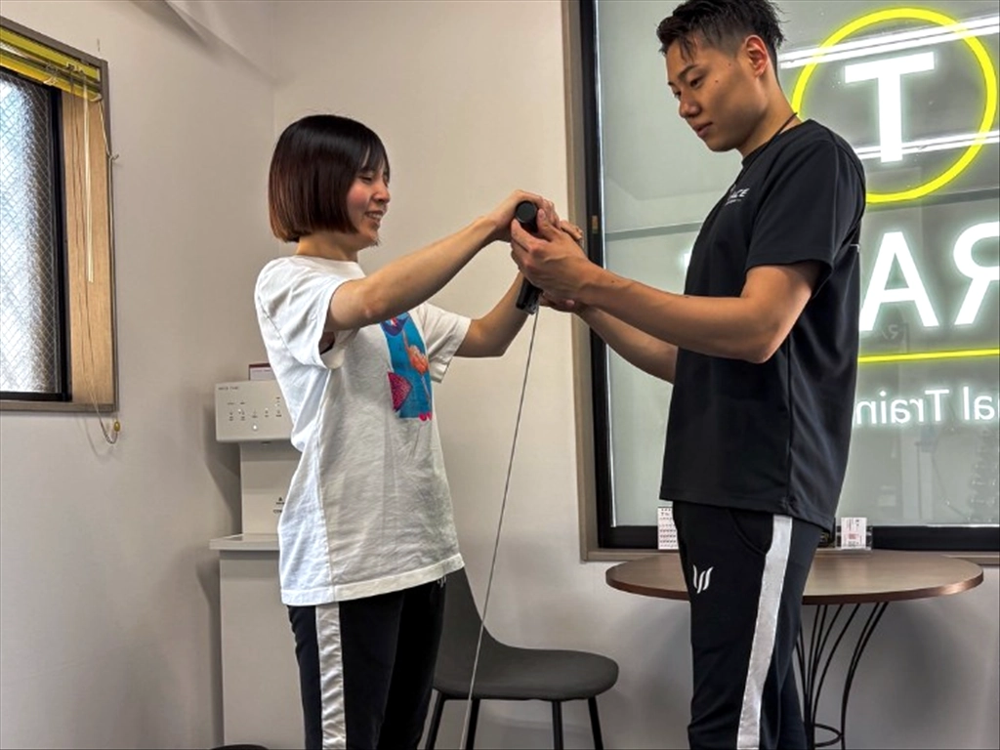
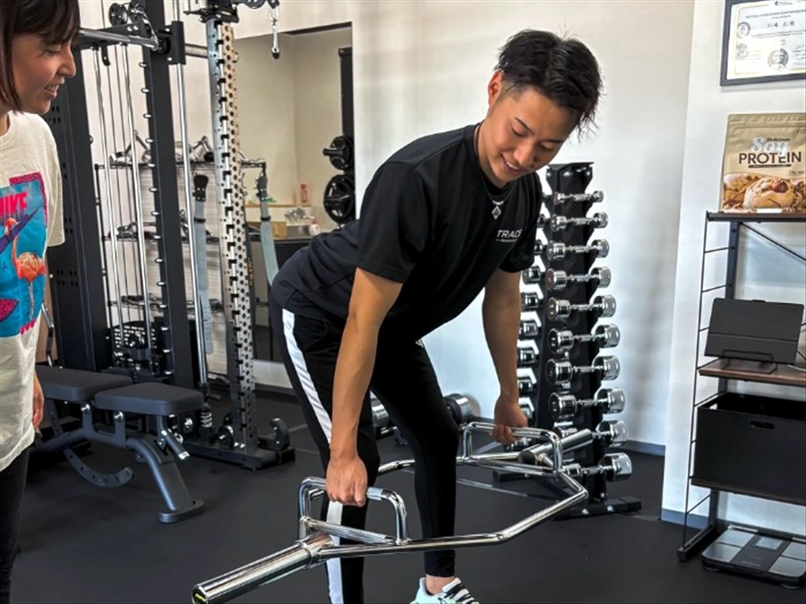

何ヶ月で痩せるかは人によって違う
同じ回数トレーニングをしても、スタート時の体重や体脂肪率、食事量、日常の活動量によって結果は変わります。「1ヶ月で必ず何kg」と一律に決めることはできません。
最初の数週間は、トレーニングのフォームや食事の取り方を覚え、生活に無理なく組み込む準備期間にもなります。体重がすぐに大きく動かなくても、運動を続けられるリズムが整っていれば前進です。
まず3ヶ月を一区切りにする理由
1〜2週間の体重は、水分量や食事内容などでも変動します。短い期間の数字だけで判断すると、順調に進んでいても不安になりやすくなります。
まず3ヶ月を一区切りにすると、トレーニングを段階的に進めながら、食事や睡眠、日常の活動量を振り返る時間を確保できます。途中で合わない方法が見つかった場合も、負荷や食事の取り方を調整できます。
3ヶ月で必ず目標体重に到達するという意味ではありません。目標と現在の状態によっては、6ヶ月以上かけて進める方が無理なく続けやすい場合もあります。
変化の早さを左右する5つの要素

1．現在の体重・体脂肪率
スタート地点と目標との差によって、必要な期間は変わります。体重だけでなく、筋肉量や体脂肪率も見ながら目標を設定します。
2．トレーニングの頻度
通う回数が多ければ必ず早く痩せるわけではありません。運動経験や回復の状態に合った頻度で続けることが大切です。詳しくは「パーソナルジムは週何回通えば痩せる？」をご覧ください。
3．食事の内容と量
トレーニングをしていても、摂取するエネルギーが日常的に多ければ体重は減りにくくなります。一方で、極端に食事を減らす方法も続きにくく、必要な栄養が不足する可能性があります。
4．日常の活動量
ジムでの運動だけでなく、歩く時間や座っている時間など、普段の過ごし方も関係します。無理に特別な運動を増やすより、まずは日常で動く機会を少しずつ増やします。
5．睡眠と継続しやすさ
忙しさや睡眠不足で計画どおりに進められない日もあります。毎日完璧に行うのではなく、生活に合わせて調整し、長く続けられる形をつくることが重要です。
運動だけ・食事だけに偏らない
厚生労働省の健康情報でも、体重管理には身体活動と食事を組み合わせることが重要とされています。また、体脂肪1kgに相当するエネルギー量は約7,000kcalとされ、数日だけ頑張るのではなく、日々の小さな調整を積み重ねる考え方が必要です。
特定の食品を完全に抜いたり、食事量を極端に減らしたりするのではなく、普段の食事を見直しながらトレーニングを続けます。外食や予定がある日も含めて調整できる方法の方が、長期的には取り組みやすくなります。
参考：厚生労働省「健康づくりのための身体活動・運動ガイド2023 情報シート」「肥満・メタボリックシンドローム予防の食事」
体重以外の変化も確認する
ダイエットの進み具合を体重だけで判断すると、筋肉量や水分量の変化を見落とすことがあります。次のような変化も一緒に確認しましょう。
- 体脂肪率や身体のサイズ
- 写真で見た姿勢や見た目
- 扱える重量やできる回数
- 疲れにくさや動きやすさ
- 食事や運動を続けられているか
数値が一時的に停滞しても、身体の動きや生活習慣が改善していることがあります。複数の基準で振り返ると、必要な調整が分かりやすくなります。
佐賀市のTRACEでの進め方

佐賀市神野西のパーソナルジム TRACEでは、現在の状態と目標を確認し、一人ひとりに合わせてトレーニング内容を調整します。短期間だけ無理をするのではなく、生活の中で続けられる習慣をつくることを大切にしています。
完全個室・マンツーマンのため、運動初心者の方も自分のペースで取り組めます。体験当日の流れや持ち物は「初心者向け体験ガイド」で紹介しています。
持病がある方、服薬中の方、妊娠中の方、痛みや体調面に不安がある方は、運動や減量を始める前に医師へご相談ください。